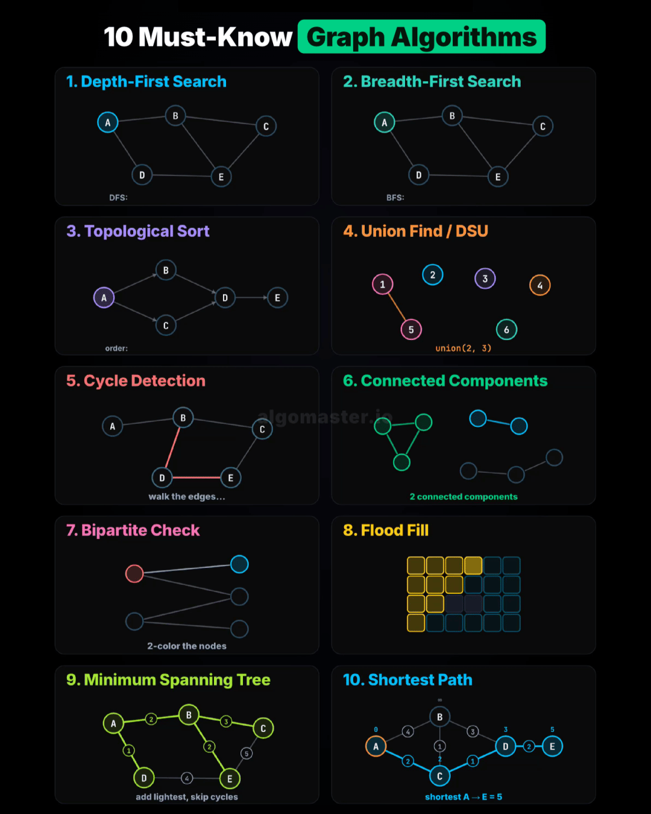

Cheat-sheets and diagrams for the algorithms worth recognizing on sight. Each one distills a family of problems into a single picture you can recall under interview pressure. More sheets get added over time.
The core graph toolkit on one page — traversal, ordering, connectivity, and shortest paths. If you can name the technique and sketch its picture, most graph interview questions reduce to picking the right one from this list.
